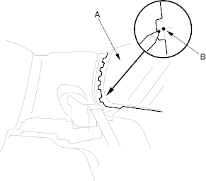
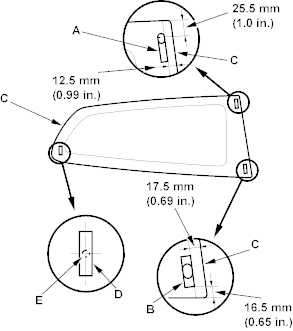

- Set the quarter glass (A) in the opening and centre it. From inside the vehicle, make alignment mark (B) to the quarter glass where the rear clip will be installed with a grease pencil. Be careful not to touch the glass where adhesive will be applied.

- Remove the quarter glass.
- Align the upper clip (A) and lower clip (B) with the edge of the quarter glass (C), then glue them to the inside face of the quarter glass and align the centre of the rear clip (D) with the alignment mark (E) you made in step 9 and glue it to the inside face of the quarter glass as shown. Be careful not to touch the glass where adhesive will be applied.
